Epic fantasy
A lone dragon glides over jagged misty peaks at dawn, golden god rays piercing fog, vast silhouette
our 1-step · PS 22.64
4-step · teacher 1-step · ours
A floating castle adrift in glowing cloudbanks, backlit by soft amber sunrise, sweeping cinematic vista
our 1-step · PS 22.26
4-step · teacher 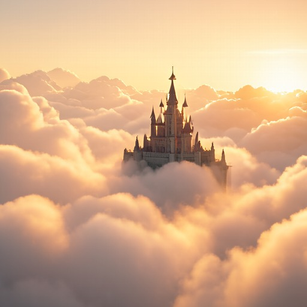
1-step · ours
A floating island fortress in violet storm clouds, lightning glow behind, single hero spire, vast moody atmosphere
our 1-step · PS 22.39
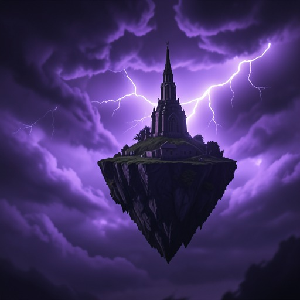
4-step · teacher 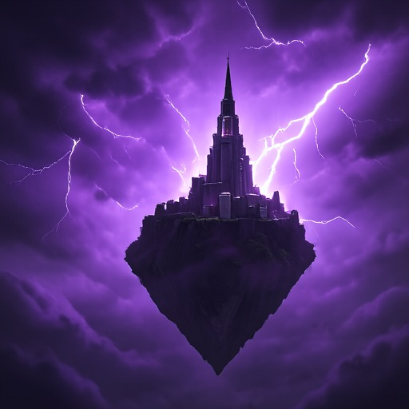
1-step · ours
Golden-hour valley of waterfalls in mist, lone soaring eagle, warm volumetric light, cinematic wide vista
our 1-step · PS 21.98
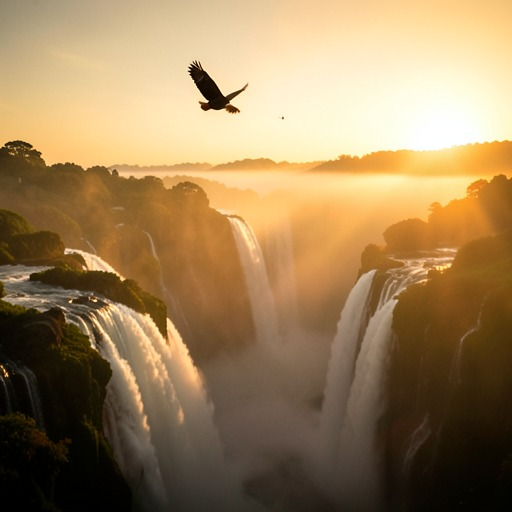
4-step · teacher 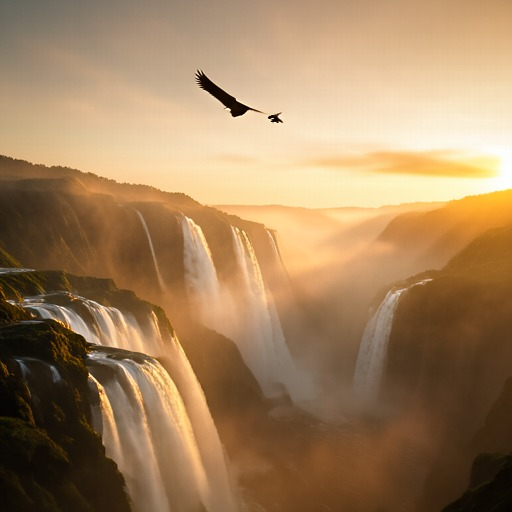
1-step · ours
Sci-fi worlds
Colossal starship descending over neon megacity, glowing teal haze, lone tower silhouette, cinematic backlight
our 1-step · PS 22.53
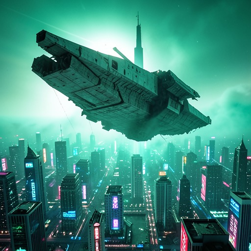
4-step · teacher 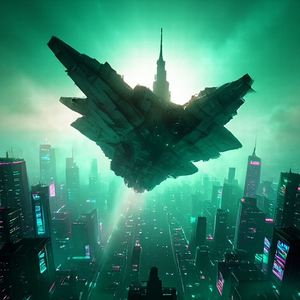
1-step · ours
Alien desert under twin suns, golden dust haze, lone wanderer silhouette, vast dunes, warm horizon glow
our 1-step · PS 21.99
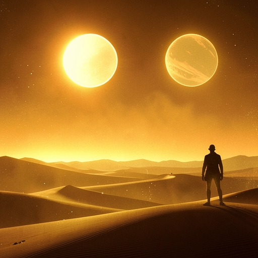
4-step · teacher 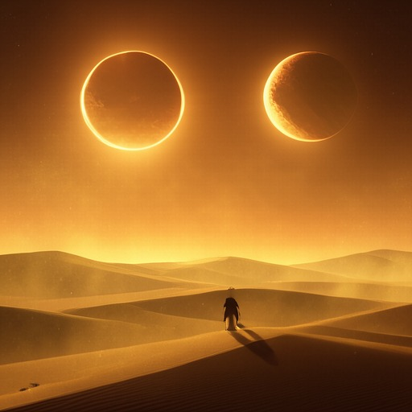
1-step · ours
Towering mech silhouette in rainy neon city, magenta and cyan glow, volumetric fog, moody cinematic backlight
our 1-step · PS 24.26 ★
4-step · teacher 1-step · ours
Floating crystal city above orange cloud sea, twin moons rising, golden god rays, lone airship silhouette
our 1-step · PS 22.30
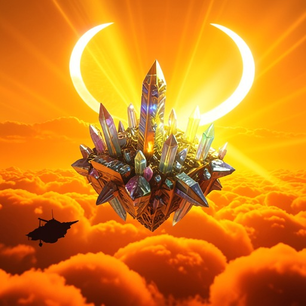
4-step · teacher 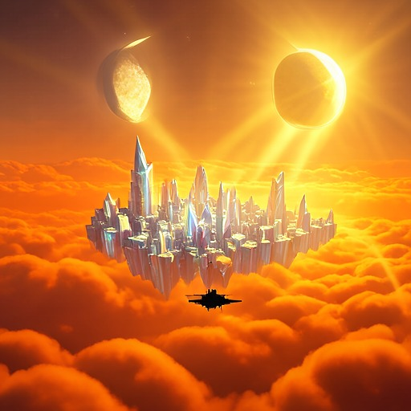
1-step · ours
Space & cosmos
Lone astronaut silhouette drifting in vast violet nebula, glowing rim light, teal and magenta haze
our 1-step · PS 23.37 ★
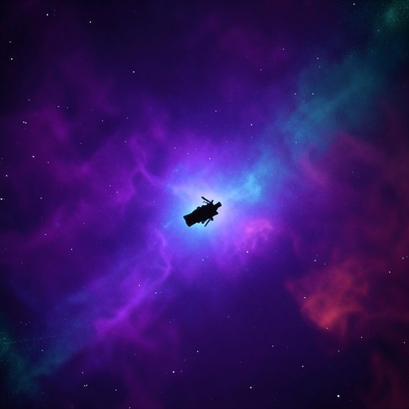
4-step · teacher 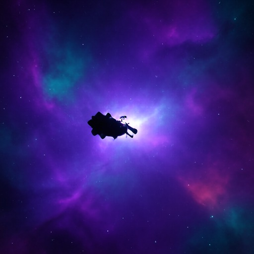
1-step · ours
Giant ringed gas giant rising over barren moon horizon, golden backlight, lone figure for scale, wide vista
our 1-step · PS 23.02
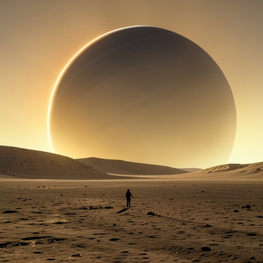
4-step · teacher 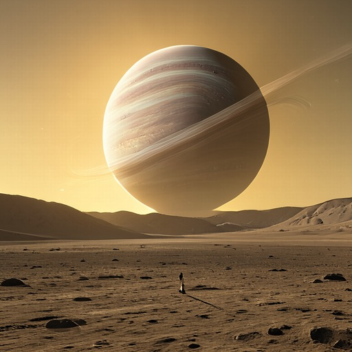
1-step · ours
Swirling crimson nebula with bright newborn star, volumetric glow, deep cosmic blacks, breathtaking scale
our 1-step · PS 23.89 ★
4-step · teacher 1-step · ours
Earthrise over lunar surface, glowing blue planet, stark black sky, single explorer silhouette, cinematic grandeur
our 1-step · PS 23.23 ★
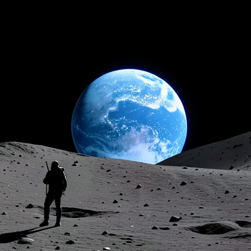
4-step · teacher 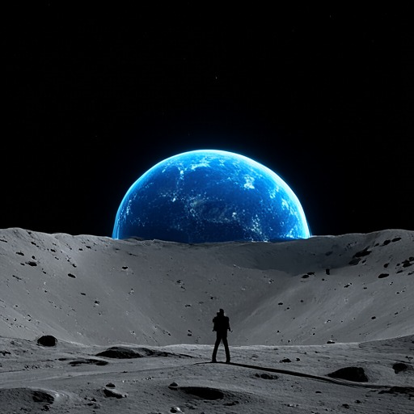
1-step · ours
Underwater
Lone humpback whale gliding through golden god rays, deep blue haze, drifting silt, vast cinematic silhouette
our 1-step · PS 21.12
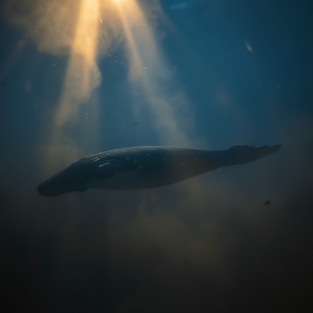
4-step · teacher 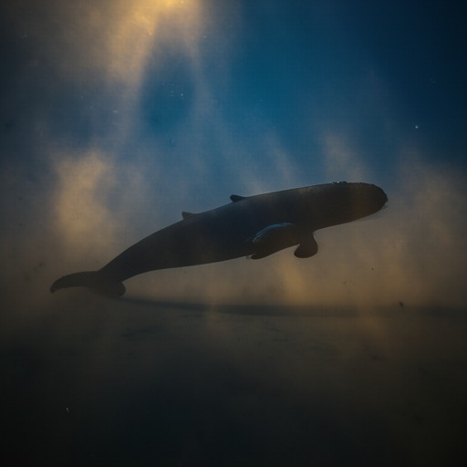
1-step · ours
Glowing bioluminescent reef in teal darkness, electric blue and magenta haze, single radiant anemone hero
our 1-step · PS 21.69
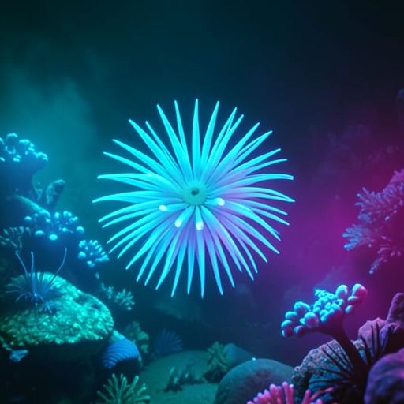
4-step · teacher 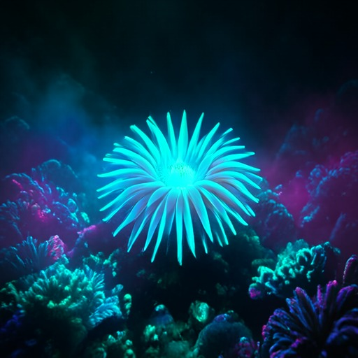
1-step · ours
Sunken temple ruin in blue-green haze, shafts of light through arches, lone diver silhouette for scale
our 1-step · PS 21.82
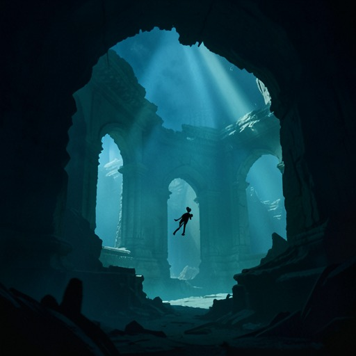
4-step · teacher 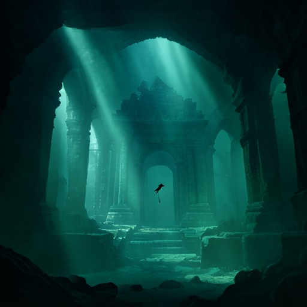
1-step · ours
Giant manta ray soaring through turquoise god rays, glowing surface above, deep indigo abyss, epic scale
our 1-step · PS 23.41 ★
4-step · teacher 1-step · ours
Dramatic weather
Lightning storm over dark sea, single fishing boat silhouette, electric blue bolts splitting black clouds
our 1-step · PS 22.43
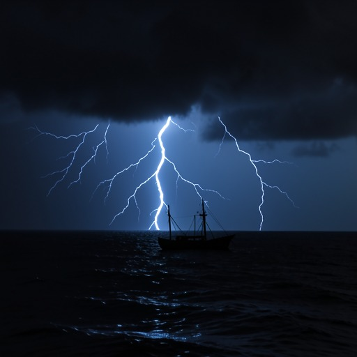
4-step · teacher 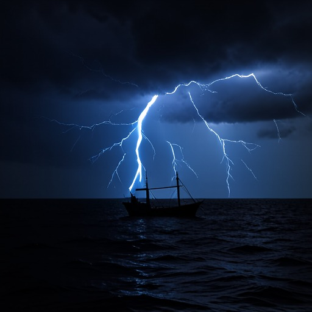
1-step · ours
Massive tornado on golden plains at sunset, lone barn silhouette, swirling dust and amber backlight
our 1-step · PS 21.16
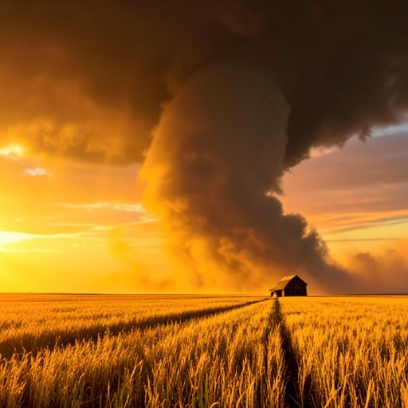
4-step · teacher 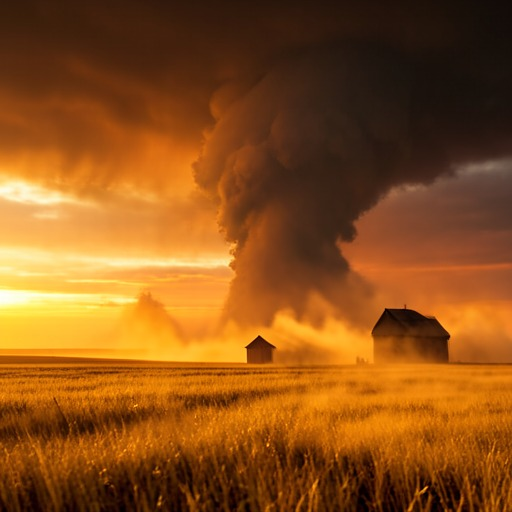
1-step · ours
Volcanic eruption at night, glowing orange lava fountain, ash plume against black sky, distant ridge silhouette
our 1-step · PS 21.95
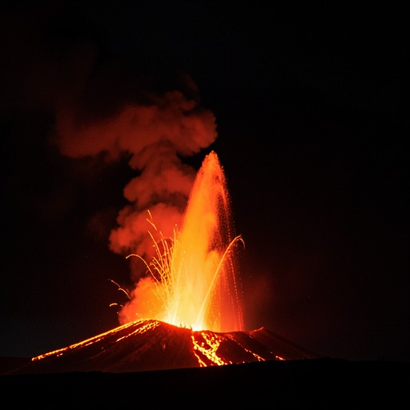
4-step · teacher 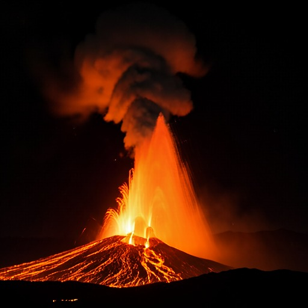
1-step · ours
Giant rogue wave at dawn, glowing emerald crest, lone surfer silhouette, misty spray and golden backlight
our 1-step · PS 21.11
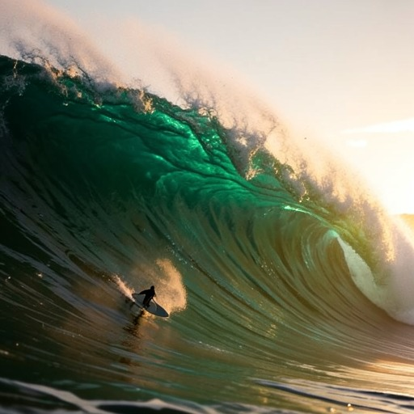
4-step · teacher 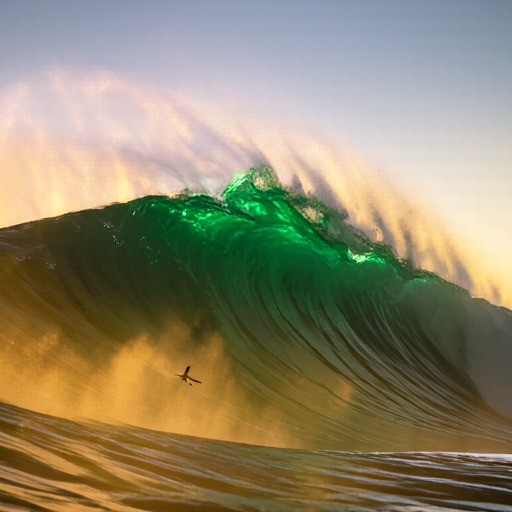
1-step · ours
Epic hero shots
Lone warrior silhouette on a clifftop, vast golden sunset, glowing horizon, drifting haze, cinematic backlight
our 1-step · PS 20.88
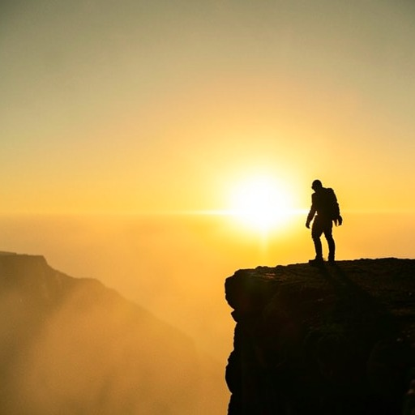
4-step · teacher 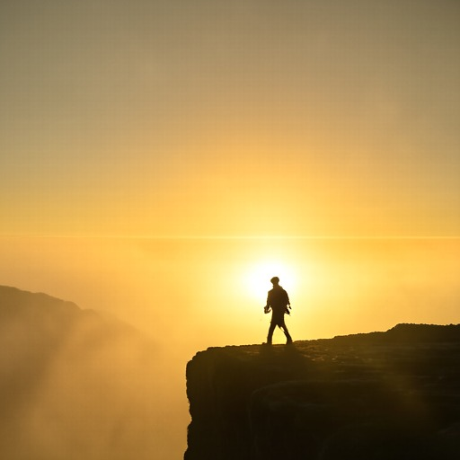
1-step · ours
Tiny figure at base of colossal waterfall, misty spray, soft god rays, teal depths, towering scale
our 1-step · PS 22.23
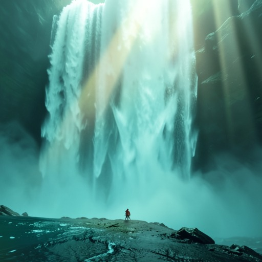
4-step · teacher 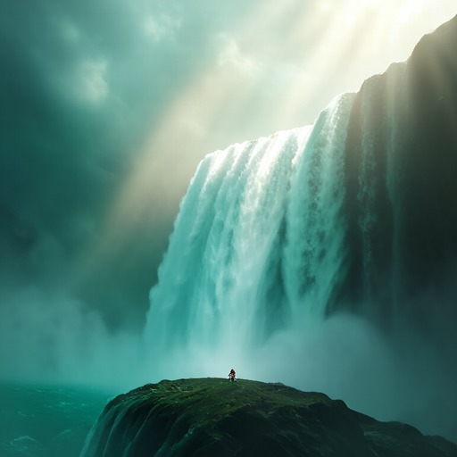
1-step · ours
Knight standing in cathedral god rays, volumetric dust, golden shafts, deep shadow, glowing silhouette
our 1-step · PS 23.20 ★
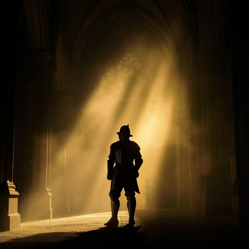
4-step · teacher 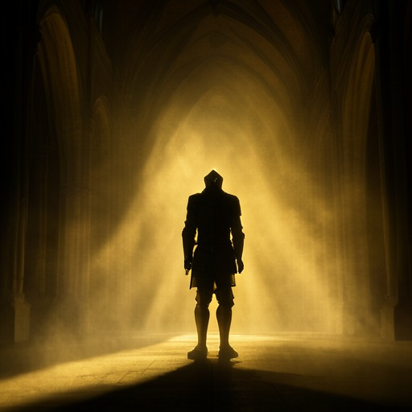
1-step · ours
Samurai silhouette against a blood-red moon, drifting mist, bold backlight, moody crimson sky, cinematic
our 1-step · PS 22.47
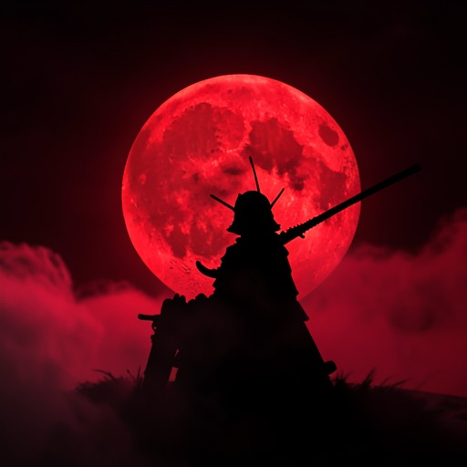
4-step · teacher 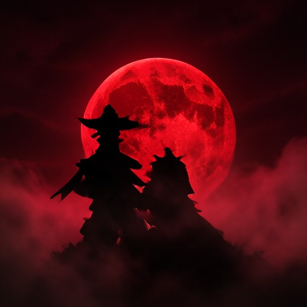
1-step · ours
Mythical creatures
A blazing phoenix rising from glowing embers, fiery orange wings spread against dark smoldering sky
our 1-step · PS 23.80 ★
4-step · teacher 1-step · ours
A colossal silhouetted wolf in a raging snowstorm, glowing eyes, cold blue haze and swirling snow
our 1-step · PS 22.67
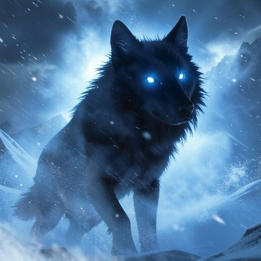
4-step · teacher 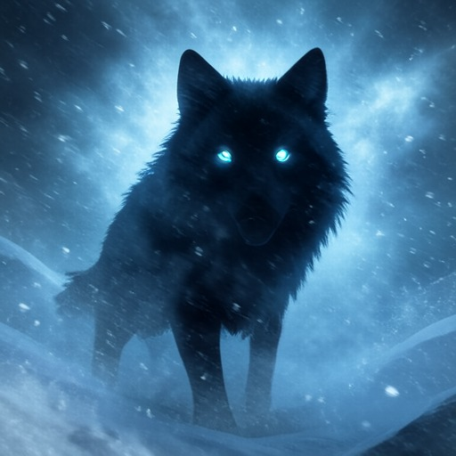
1-step · ours
A massive sea serpent breaching at dusk, dark silhouette against glowing orange horizon, misty spray
our 1-step · PS 23.04
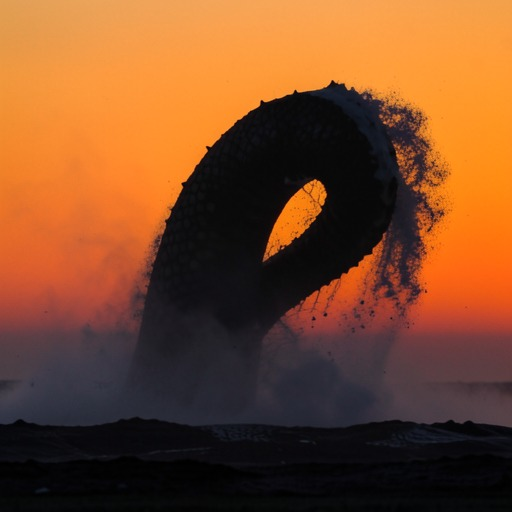
4-step · teacher 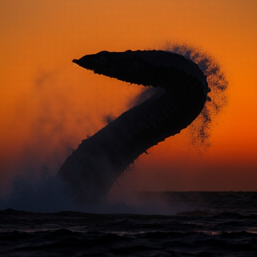
1-step · ours
A radiant unicorn in an enchanted forest, soft volumetric light rays, glowing mist, magical teal glow
our 1-step · PS 21.48
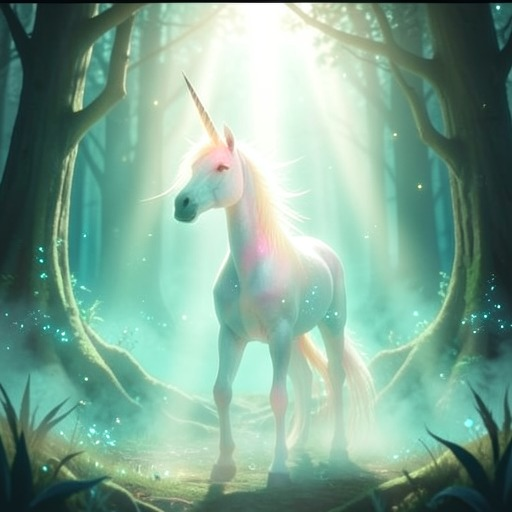
4-step · teacher 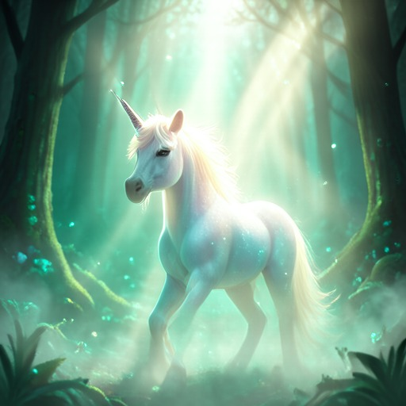
1-step · ours
Grand architecture
Colossal jungle temple swallowed in dawn mist, god rays piercing green haze, lone silhouette on stone steps
our 1-step · PS 22.09
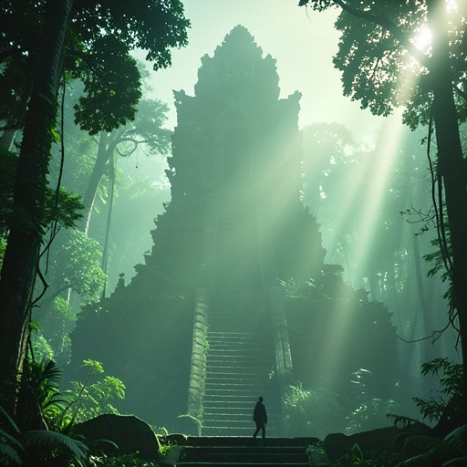
4-step · teacher 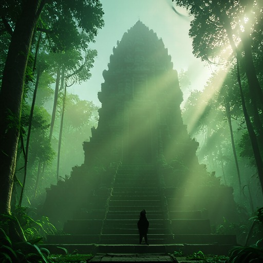
1-step · ours
Ancient ruined colonnade under stormy sky, dramatic backlight, lightning silhouette, moody blue haze, vast scale
our 1-step · PS 21.55
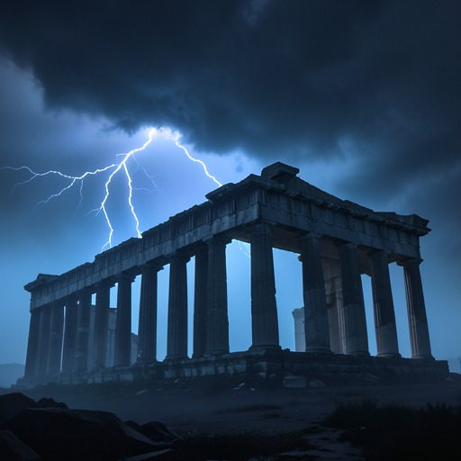
4-step · teacher 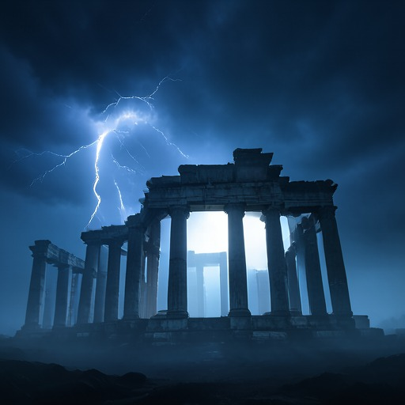
1-step · ours
Underground cathedral cavern, single shaft of light on ancient pillar, glowing dust, deep teal shadows
our 1-step · PS 22.94
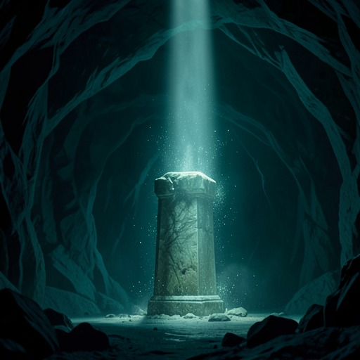
4-step · teacher 1-step · ours
Towering pyramid in sandstorm, sun glowing through haze, bold silhouette, warm amber atmosphere, epic vista
our 1-step · PS 21.90
4-step · teacher 1-step · ours
Vehicles in motion
Lone red sports car drifting through neon rain, glowing tire smoke, wet reflections, cinematic teal-orange night
our 1-step · PS 22.03
4-step · teacher 1-step · ours
Fighter jet bursting through golden clouds at dawn, vapor cone trailing, dramatic backlight, vast cinematic sky
our 1-step · PS 21.93
4-step · teacher 1-step · ours
Steam train crossing misty stone viaduct, billowing smoke, volumetric god rays, moody blue valley fog
our 1-step · PS 22.52
4-step · teacher 1-step · ours
Rally car airborne over muddy ridge, dirt spray exploding, low golden sun, dramatic silhouette, dust haze
our 1-step · PS 22.45
4-step · teacher 1-step · ours
Cinematic crowds
Foggy night market, glowing stall lanterns, one cloaked vendor silhouette, warm amber haze, bokeh glow
our 1-step · PS 22.53
4-step · teacher 1-step · ours
Rain-soaked crowd under neon, one lone figure with umbrella, teal-magenta glow, wet reflections, motion blur
our 1-step · PS 22.53
4-step · teacher 1-step · ours
Lantern festival at dusk, glowing orbs rising, single child silhouette, golden haze, soft bokeh, dreamy cinematic
our 1-step · PS 21.47
4-step · teacher 1-step · ours
Bustling train station at dawn, god rays through glass roof, one traveler silhouette, golden dust haze, vast scale
our 1-step · PS 22.46
4-step · teacher 1-step · ours
Surreal & dreamlike
Upside-down ocean as the sky, lone silhouetted figure on misty shore, teal-orange dusk glow
our 1-step · PS 22.73
4-step · teacher 1-step · ours
Giant pale moon looming over a quiet sleeping town, soft blue haze, single lit window aglow
our 1-step · PS 22.85
4-step · teacher 1-step · ours
Impossible spiral staircase dissolving into clouds, lone wanderer silhouette, dreamy lavender twilight haze
our 1-step · PS 20.90
4-step · teacher 1-step · ours
Colossal door standing alone in a desert of fog, blinding golden light spilling through
our 1-step · PS 22.66
4-step · teacher 1-step · ours
Epic wildlife
Lone elephant herd marching through golden dust at sunset, backlit, volumetric haze, cinematic silhouette
our 1-step · PS 22.34
4-step · teacher 1-step · ours
Lone wolf howling on a snowy peak under full moon, cold blue glow, bold silhouette
our 1-step · PS 23.43 ★
4-step · teacher 1-step · ours
A breaching whale against a fiery horizon, ocean spray glowing, dramatic golden backlight, epic scale
our 1-step · PS 22.73
4-step · teacher 1-step · ours
Lion standing on a rock at golden hour, dust haze, warm backlight, dramatic cinematic silhouette
our 1-step · PS 22.64
4-step · teacher 1-step · ours